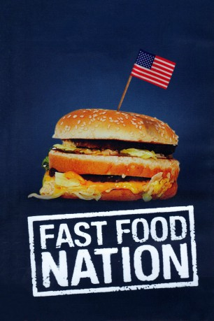

#11471 Fast Food Nation
 
 IMDB-Wertung: 6.3 / 10
IMDB-Wertung: 6.3 / 10  Tomatometer: 50
Tomatometer: 50  Metascore: 64
Metascore: 64 
“Fast Food Nation” erzählt die Geschichte von Don Henderson, dem Marketingchef der Fast-Food-Kette Mickey’s. Als sich herausstellt, dass mit Kolibakterien verseuchtes Fleisch in den Verkaufschlager “The Big One” gelangt ist, macht es sich Henderson zur Aufgabe, dem Skandal auf die Spur zu kommen. Es beginnt eine Reise, die Dons Blick auf sein Unternehmen grundlegend verändert. In Texas, wo die Burger produziert werden, muss er erkennen, dass der unersättliche Appetit Amerikas auf Fast Food ein im wahrsten Sinne des Wortes schmutziges Geschäft ist: Fern ab der Firmenzentrale in Kalifornien eröffnet sich ihm die bittere Realität illegaler Immigranten, die Wahrheit über brutale Schlachtmethoden und die Gründe für die miserable Qualität des Burgerfleisches. Er erfährt auch, dass sein Arbeitgeber all das nicht nur billigend in Kauf nimmt, sondern ursächlich dafür verantwortlich ist.
Jahr: 2006
Dauer: 54 Minuten
FSK: 12
Land: England Studio: Senator FilmTonspuren:
Untertitel:
Auflösung: SD (640x336) Größe: 700 MB
Genre: Thriller, Drama, Komödie, Liebe
Regisseur:  Richard Linklater
Richard Linklater
Drehbuch: Eric Schlosser, Richard Linklater, Eric Schlosser
Soundtrack: Friends of Dean Martinez
Darsteller:
- Wilmer Valderrama als Raul
 Catalina Sandino Moreno als Sylvia
Catalina Sandino Moreno als Sylvia- Ana Claudia Talancón als Coco
 Greg Kinnear als Don Anderson
Greg Kinnear als Don Anderson- Frank Ertl als Jack
- Michael D. Conway als Phil
- Mitch Baker als Dave
 Ellar Coltrane als Jay Anderson
Ellar Coltrane als Jay Anderson Dana Wheeler-Nicholson als Debi Anderson
Dana Wheeler-Nicholson als Debi Anderson Luis Guzmán als Benny
Luis Guzmán als Benny Bobby Cannavale als Mike
Bobby Cannavale als Mike Ashley Johnson als Amber
Ashley Johnson als Amber Paul Dano als Brian
Paul Dano als Brian Patricia Arquette als Cindy
Patricia Arquette als Cindy Roger Cudney als Terry
Roger Cudney als Terry Glen Powell als Steve
Glen Powell als Steve Cherami Leigh als Kim
Cherami Leigh als Kim Esai Morales als Tony
Esai Morales als Tony- Yareli Arizmendi als Gloria
 Kris Kristofferson als Rudy Martin
Kris Kristofferson als Rudy Martin Hugo Perez als Francisco
Hugo Perez als Francisco Bruce Willis als Harry Rydell
Bruce Willis als Harry Rydell- Erinn Allison als Hotel Desk Clerk
- Lana Dieterich als UMP Nurse
- John Scott Horton als Greg
 Ethan Hawke als Pete
Ethan Hawke als Pete Aaron Himelstein als Andrew
Aaron Himelstein als Andrew- Avril Lavigne als Alice
 Marco Perella als Tom Watson
Marco Perella als Tom Watson Lou Taylor Pucci als Gerald 'Paco'
Lou Taylor Pucci als Gerald 'Paco'- Joe Azzato als Restaurant Customer (uncredited)
- Karrie Cox als Waitress (uncredited)
- Derek Chase Hickey als Restaurant Customer (uncredited)
- Vivian Kaw als Student (uncredited)
- Jason McDonald als Riley (uncredited)
 Gary Teague als Restaurant Customer (uncredited)
Gary Teague als Restaurant Customer (uncredited)- Juan Carlos Serrán als Esteban
- Armando Hernández als Roberto
- Dakota Edwards als Stevie Anderson
- Francisco Rosales als Jorge
- Matt Hensarling als Kevin
- Mileidy Moron Marchant als Vicky
- Raquel Gavia als Rita
- Helen Merino als Lisa
- Barbara Chisholm als Waitress
- Larizza Salcido Gameros als Maria
- Mónica Cano Mascorro als Magdalene
- Carlos Adrian Romero Ayala als Tino
- Humberto E. Velez Sanchez als Cesar
- Cora Cardona als Kristen - UMP Translator
Datei: X:\2006(A-F)\Fast Food Nation (2006, FSK12, 640x336) - CD1.avi seit 13.07.2019
Festplatte: HD 2005(G-Z)-2006(A-Z)
 Es gibt insgesamt 56 Filme in der Gruppe '2006(A-F)'
Es gibt insgesamt 56 Filme in der Gruppe '2006(A-F)'